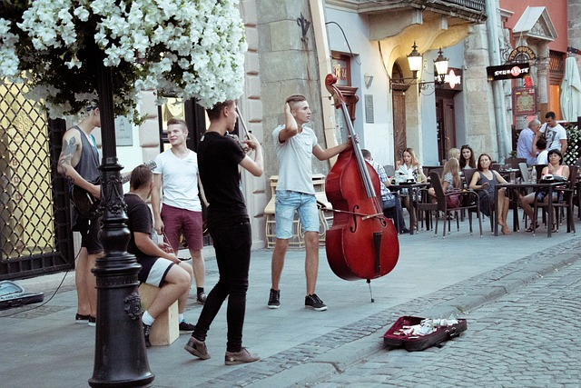
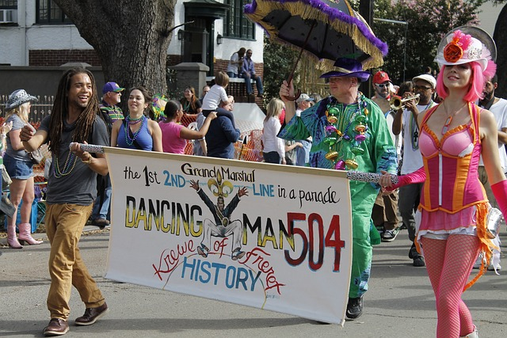
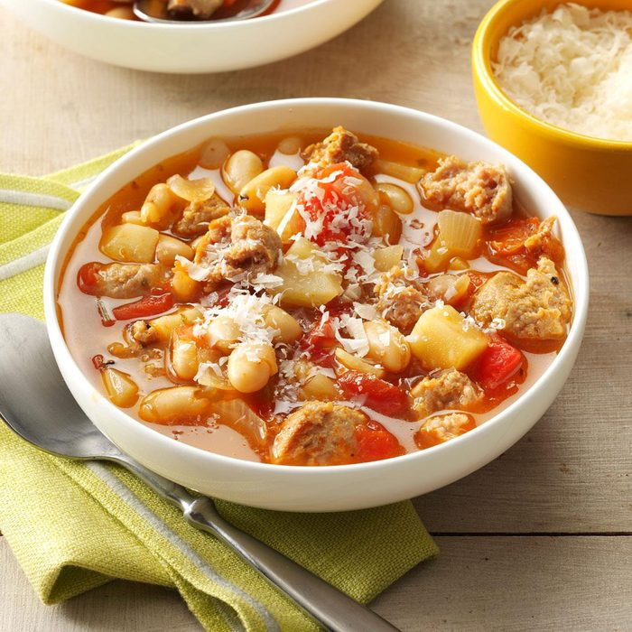
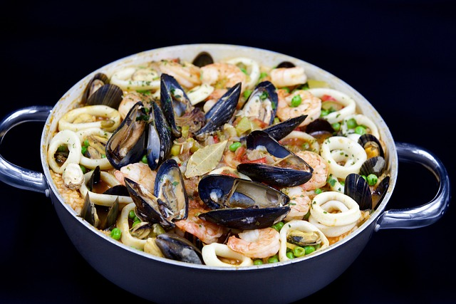

La Nouvelle-Orléans, Le Berceau Vibrant du Jazz!
Histoire
Il était une fois, dans les profondeurs des marais de Louisiane, une ville unique et envoûtante appelée la Nouvelle-Orléans. Fondée en 1718 par des colons français, la ville a prospéré le long des rives du majestueux fleuve Mississippi, devenant rapidement un carrefour commercial animé et un melting-pot culturel.
Au fil des siècles, la Nouvelle-Orléans est devenue un lieu de rencontre pour une multitude de peuples et de cultures, des Amérindiens aux Africains en passant par les Européens et les Créoles. Chaque groupe a apporté ses propres traditions, sa musique, sa cuisine et son langage, contribuant à l'essence unique de la ville.
La Nouvelle-Orléans est également connue pour sa célébration de la vie et de la musique. Les rues résonnent du son envoûtant du jazz, qui est né dans les clubs de la ville au début du XXe siècle. Des musiciens légendaires comme Louis Armstrong, Jelly Roll Morton et Fats Domino ont enchanté le monde avec leur talent et leur créativité.
Aujourd'hui, la Nouvelle-Orléans continue d'attirer les visiteurs du monde entier avec son charme envoûtant, ses festivals vibrants, sa cuisine délicieuse et son héritage culturel riche. Que ce soit en déambulant dans le quartier historique du French Quarter, en dégustant des beignets chauds au Café du Monde ou en dansant au son du jazz dans un club de la rue Bourbon, chaque coin de la Nouvelle-Orléans raconte une histoire captivante de passion, de joie et de tradition.

Jazz Fest
Le New Orleans Jazz & Heritage Festival, souvent appelé Jazz Fest, est un événement musical emblématique qui se tient chaque année au printemps. Pendant deux week-ends, les meilleurs musiciens de jazz, de blues, de funk, de rock, de gospel et de musique du monde se produisent sur plusieurs scènes à travers la ville.

Mardi Gras
Mardi Gras est la fête la plus célèbre de la Nouvelle-Orléans, se déroulant chaque année à la fin du carême, généralement en février ou en mars. Cette célébration colorée et exubérante comprend des défilés spectaculaires, des costumes élaborés, des défilés de fanfares, des balles masquées et une ambiance festive dans toute la ville.

Le Gumbo
Le gumbo est un plat traditionnel de la cuisine créole de la Nouvelle-Orléans, un ragoût épicé à base de roux, de légumes (comme le céleri, les poivrons et les oignons), de viande (généralement du poulet, de la saucisse andouille ou des fruits de mer) et de riz. Chaque famille et chaque restaurant a sa propre recette secrète de gumbo, ce qui en fait un plat polyvalent et réconfortant.
Le Jambalaya
Le jambalaya est un plat cajun classique de la Nouvelle-Orléans, similaire à une paella, mais avec des saveurs et des ingrédients typiquement louisianais. Il est préparé avec du riz, des légumes, des épices, de la viande (comme du poulet, de la saucisse andouille ou des fruits de mer) et parfois même du gibier, le tout mijoté ensemble pour créer un plat savoureux et copieux.

.jpeg)
Le Po'boy
Le po'boy est un sandwich emblématique de la Nouvelle-Orléans, composé de pain français croustillant garni de viande (comme du poulet frit, de la crevette frite, du porc rôti ou du bœuf grillé), de laitue, de tomate et de mayonnaise. C'est un plat réconfortant et délicieux, souvent servi avec des frites ou des croustilles.
.jpeg)